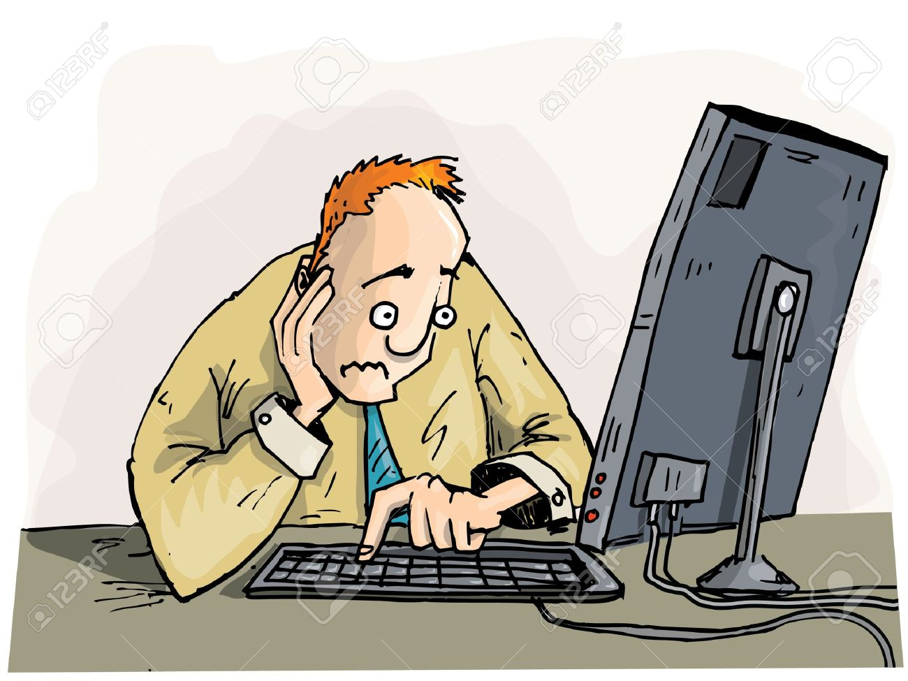

Urgente e Importante

Crisis
Presiones
Proyectos con fecha de vencimiento próximo.
Estres
Siempre Apagando Incendios
El moroso es adicto a la urgencia. Le gusta dejar las cosas para después hasta que se convierte en una crisis. Pero le gusta así porque, dejar todo para último momento le da un sentido de urgencia. De hecho, siente que su mente no funciona hasta que hay una emergencia. Le encanta la presión. Pero planificar anticipadamente es algo que no tiene sentido para la persona morosa porque podría acabar con la emoción de hacer todo a último momento.